Explorez Paris


La Ville Lumière éblouit en tous points
Aucun autre endroit au monde ne fait autant rêver que Paris. La ville séduit par son art, son architecture, sa culture et sa cuisine, mais il y a aussi des merveilles plus discrètes qui n’attendent qu’à être explorées : les ruelles pavées pittoresques, les pâtisseries au coin de la rue et les petits bistrots douillets qui vous invitent à boire un verre de beaujolais. Préparez-vous à vous approprier Paris.
Paris : les immanquables
Se divertir
Des lieux à voir, des rues à explorer et des expériences emblématiques à Paris.
Tout afficher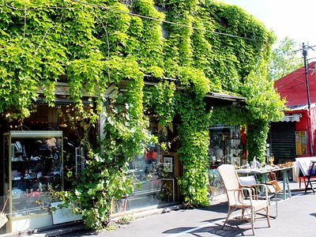
Marché aux Puces de Saint-Ouen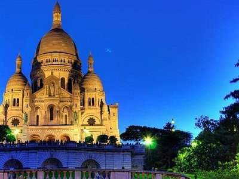
Basilique du Sacré-Cœur de Montmartre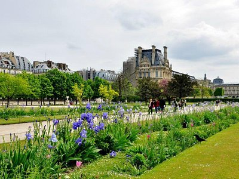
Jardin des Tuileries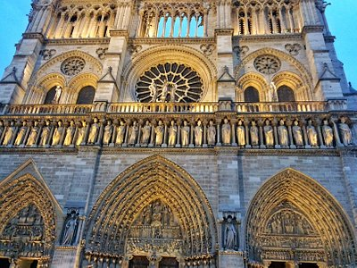
Cathédrale Notre-Dame de Paris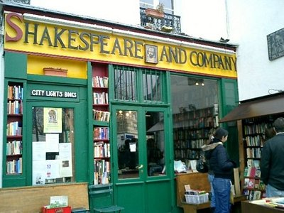
Librairie Shakespeare and Company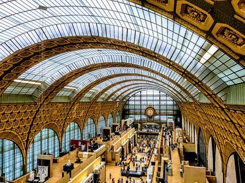
Musée d'Orsay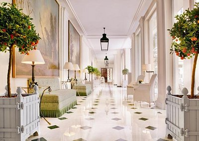
Le Bristol Paris
La Réserve Paris - Hotel and Spa
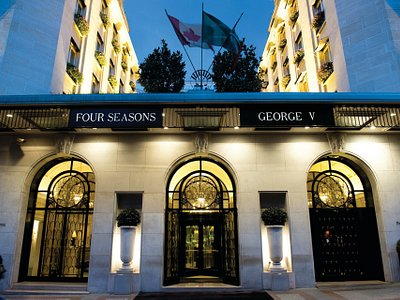
Four Seasons Hotel George V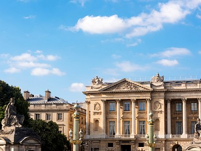
Hôtel de Crillon, A Rosewood Hotel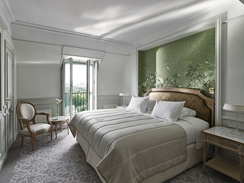
Le Meurice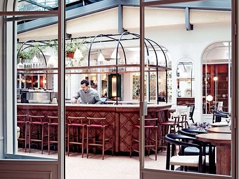
Hotel des Grands Boulevards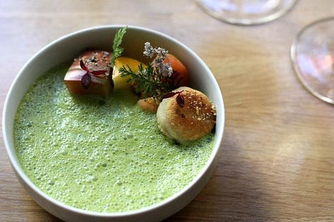
Verjus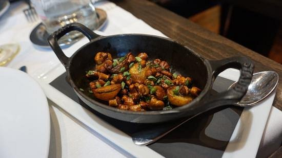
114 Faubourg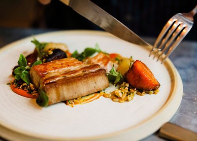
Frenchie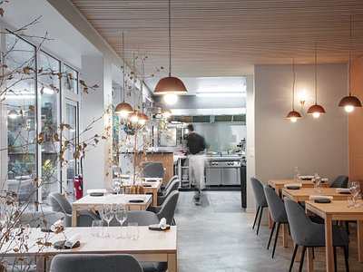
La table de colette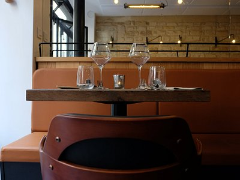
ASPIC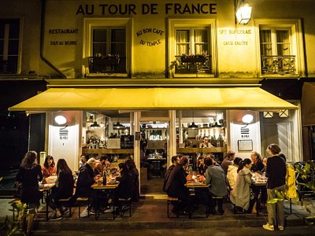
Crêperie gigi